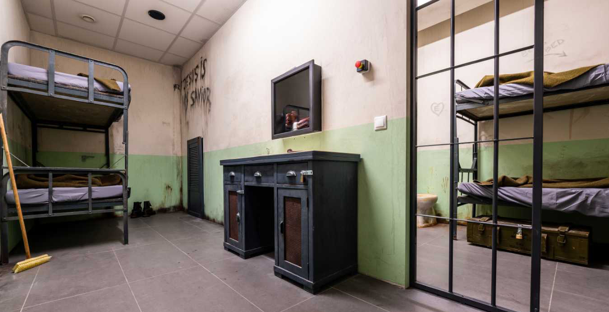
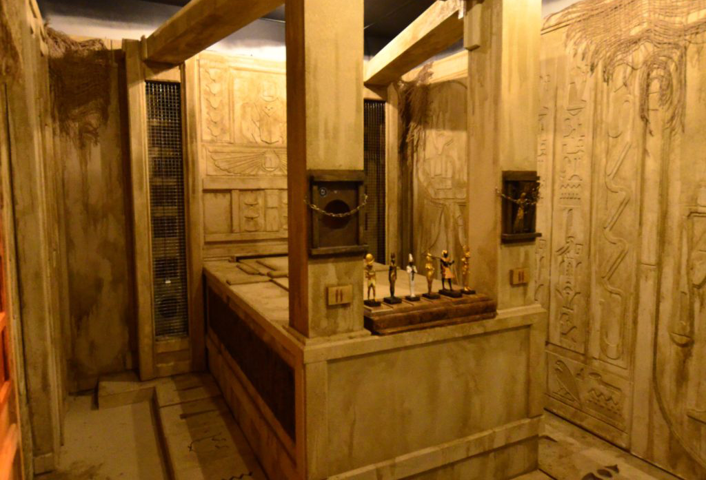

Izgalom, logika és csapatmunka egy helyen
Dunaújvárosban.

Szabadulószobánk célja, hogy Dunaújvárosban is elérhetővé tegye azt az izgalmas és élményekben gazdag kikapcsolódást, amely eddig főként a nagyvárosok sajátja volt. Egy olyan helyet hoztunk létre, ahol a játék nem csupán feladványok sorozata, hanem egy teljes történet,amelynek ti váltok a főszereplőivé.
Pályáink kialakításakor kiemelt figyelmet fordítottunk arra, hogy minden részlet hitelesen illeszkedjen az adott témához. A díszletek, a technikai megoldások és a logikai feladatok együtt teremtenek valósághű élményt, így a játék során könnyen megfeledkezhettek a külvilágról. Nálunk nincs két egyforma kihívás, minden szoba saját történettel, hangulattal és egyedi megoldásokkal várja a csapatokat.


A feladványokat úgy terveztük meg, hogy egyszerre ösztönözzék a kreatív gondolkodást, az együttműködést és a problémamegoldó képességet. A játék során olyan érzésben lehet részetek, mintha egy kalandfilm vagy rejtvényekkel teli történet közepébe csöppentetek volna, ahol minden döntésetek közelebb vihet a szabaduláshoz.
Szobáinkat úgy alakítottuk ki, hogy minden játék valódi kalandélményt nyújtson. Nem csupán rejtvényeket oldotok meg, hanem egy történet részeseivé váltok, ahol a siker kulcsa az együttműködés és a kreatív gondolkodás.
Nagy hangsúlyt fektetünk arra, hogy minden helyszín hangulata teljes mértékben visszaadja a történet világát. A részletes kidolgozás segít abban, hogy játék közben teljesen kizárjátok a külvilágot.
Feladványaink nem ismétlődő, sablonos megoldásokra épülnek. A játék során logikai, megfigyelési és csapatmunkára építő kihívásokkal találkozhattok.
Szabadulószobáink kezdők és tapasztalt játékosok számára egyaránt élvezhetőek. Baráti társaságok, családok, diákcsoportok és céges csapatok számára is kiváló program.
Könnyen megközelíthető helyszínen várjuk vendégeinket, így akár helyiek, akár a városba látogatók számára ideális szórakozási lehetőséget kínálunk. teszt